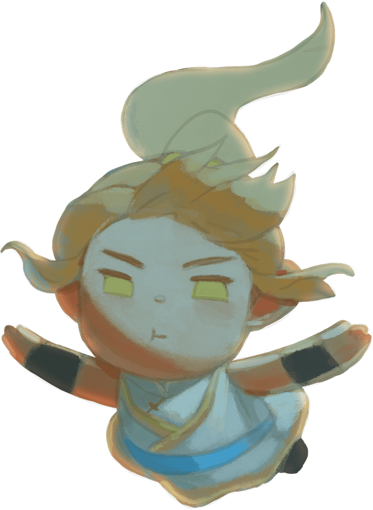

- Scroll down -
將故事背景設定在深水
是因為情緒就像水一樣
可以優游，也可以沈溺
情緒和情緒之間會互動
有自己的社群及生活圈
也能夠獨立思考及說話
因為是否被需要而強大
手機下載APP「MAKAR」
掃描QRcode或APP內搜尋「Emotion Elves」
打開專案掃描網站內對應圖像
善意就像光點 即便微乎其微 也足以讓世界 不會陷入黑暗 善意不會沈溺 他仍嚮往光明
善意
AR
角色介紹
善意是最早出生的精靈之一，曾經是最強大的精靈，但因爲被人類遺忘而日漸衰弱。愛著人類，會因為他人的傷痛而哭泣。會因為他人的喜悅而欣喜。和惡意是並肩卻又對立的關係，與真誠和忍耐結合會成為「希望」，和虛假結合會成為「偽善」，但人們經常將他們搞混。
善意
惡意就像沼澤 即便輕輕踏足 也依舊會深陷 漸漸的被吞噬 無止盡的折磨 連掙扎也放棄
惡意
AR
角色介紹
惡意和善意同為最早出生的精靈，因爲越來越被人類需要而日漸壯大，取代了善意，成為了現今最強大的情緒精靈。什麼都不在乎，對於傷害他人感到麻木，對於善意為他人哭泣的行為感到無法理解。覺得除了善意以外的精靈都是廢物，與虛假和放縱結合會成為「絕望」。
惡意
真誠就像清流 得以洗淨濁泥 坦然映照日月 即便凝視深淵 仍然向著光明 無畏追尋出口
真誠
AR
角色介紹
和虛假是雙生精靈，彼此相同而又相反，雖是手足，卻無法同時出現。被虛假畏懼，有原則與堅持，和忍耐與善意是摯友，會阻止虛假接近善意，雖然經常受到惡意傷害，卻不曾畏懼惡意，純粹而又強大，是「快樂」、「悲傷」和「憤怒」等無法獨立存在精靈的存在條件。
真誠
虛假就像沙塵 足以覆蓋真實 卻仍害怕颳風 逕自吹淨陰霾 於是自顧自的 選擇放棄沈溺
虛假
AR
角色介紹
和真誠是雙生精靈，近代越來越頻繁出現，能夠否定所有精靈的存在，混淆是非。雖然出現頻繁，卻始終無法變得強大，膽小而脆弱，害怕真實，對善意有近乎瘋狂的執著，平時都戴著面具，真實的想法不得而知，享受和善意結合成為「偽善」的時候，但一直被真誠阻止。
虛假
忍耐閉氣沈溺 像無聲的戰鬥 蟄伏茫茫深海 在等待中沈浮 雖然看似痛苦 卻不曾被吞噬
忍耐
AR
角色介紹
和放縱是雙生精靈，和放縱並存，卻又互相制約，安靜而雋永，因為出現的條件較苛刻而較少被需要，但一旦被需要就會十分強大，能左右事件的走向。和善意與真誠是摯友，雖然和放縱對立卻很照顧放縱，受到惡意欺凌但卻不曾動搖，不會因為外在環境而改變自我原則。
忍耐
放縱就像煙花 恣意狂亂綻放 看似光彩炫目 卻不曾被留下 因為已經沈溺 所以無所畏懼
放縱
AR
角色介紹
和忍耐是雙生精靈，恣意妄為，想做什麼就做什麼，不顧後果，不管別人會不會受到傷害，只聽忍耐的話，和忍耐互相制衡，和虛假會一起玩，對其他精靈有增益作用，會放大情緒，不受控制，有時會暴走，和善意沒有交集，親近惡意，但在惡意欺負忍耐時選擇保護忍耐。
放縱
快樂容易沉浸 浸泡在不覺裡 雖然無意沈溺 醉於海忘了醒 不是不會淹沒 只是還能掙扎
快樂
AR
角色介紹
無法獨立存在的精靈之一，必須有真誠才能達成存在條件，是容易被影響，也容易感染他人的表層情緒。和悲傷與憤怒是同伴，本身沒有善惡，和善意結合會成為「喜悅」，和惡意結合會成為「嘲笑」。會因為忍耐和放縱的影響而強烈或收斂，容易被放縱影響而變得癲狂。
快樂
憤怒燃燒他人 用以武裝自我 斥喝假代溫暖 自找陷入痛苦 即便錯誤方法 還掙扎著清醒
憤怒
AR
角色介紹
無法獨立存在的精靈之一，必須有真誠才能達成存在條件，是容易被影響，也容易感染他人的表層情緒。和快樂與憤怒是同伴，本身沒有善惡，和善意結合會成為「正義」，和惡意結合會成為「暴力」。會因為忍耐和放縱的影響而強烈或收斂，容易被放縱影響而變得狂暴。
憤怒
悲傷彷彿雨落 也許渺渺煙雨 也曾大雨滂沱 可能無力自拔 即便近乎淹沒 還能努力掙脫
悲傷
AR
角色介紹
無法獨立存在的精靈之一，必須有真誠才能達成存在條件，是容易被影響，也容易感染他人的表層情緒。和快樂與憤怒是同伴，本身沒有善惡，和善意結合會成為「慈悲」，和惡意結合會成為「哀怨」。會因為忍耐和放縱的影響而強烈或收斂，容易被放縱影響而變得狷狂。
悲傷
喜歡像花一樣 開時燦爛芬芳 清淡而又香甜 卻是誘人深陷 轉瞬成為牢籠 還仍想要掙扎
喜歡
AR
角色介紹
和討厭同為特殊存在的精靈，純粹，卻能輕易地左右人的行為。總是無預期的出現，而又突然消失，抓不住又放不掉，容易變質，近代成為了能獨立誘發行為的依據。喜歡討厭，會發出HOHOHO的聲音，總是傻笑，和善意結合會成為「愛」，和放縱結合會成為「執著」。
喜歡
討厭就像荊棘 刺傷他人同時 亦綑綁著自己 複雜而又純粹 容易深陷水中 卻不至於沈溺
討厭
AR
角色介紹
和喜歡同為獨立於其他精靈以外的存在，近代強大到能以一己之力左右人的行為，是極不穩定的存在，容易出現也容易消失。討厭喜歡，卻又經常和喜歡在一起。自身不強烈，但在與其他精靈結合後會變得十分強烈，與惡意結合會成為「恨」，和放縱結合會成為「執著」。
討厭